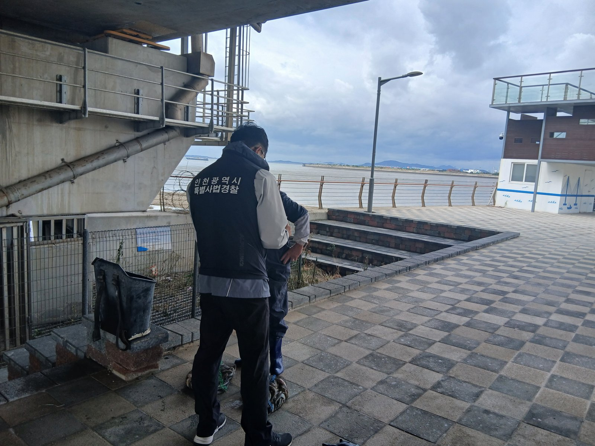

인천대교 인근 바다에 허가 없는 그물…인천시 특사경, 4명 적발
두 달 기획수사 결과, 공소청 송치 예정
AI경제저널=김갑봉 기자 | 인천시 특별사법경찰이 연수구 인천대교 인근 바다에서 허가 없이 건간망을 설치해 수산물을 잡은 어업인 4명을 적발했다. 9월부터 약 두 달 동안 벌인 가을철 연근해 불법어업 기획수사 결과다. 시는 수사를 마치는 대로 사건을 공소청에 송치할 계획이다.

바다에 고정한 그물, 허가는 구청장 몫
건간망 어업은 바다에 그물을 고정해 설치하고 조류의 흐름을 이용해 수산물을 잡는 방식이다. 「수산업법 시행령」은 건간망어업을 구획어업의 하나로 정한다. 구획어업을 하려면 어선·어구·시설마다 시장·군수·구청장의 허가를 받아야 한다.
적발된 4명은 이 허가 없이 바다에 건간망을 설치해 수산물을 잡은 것으로 드러났다고 시는 밝혔다. 「수산업법」은 허가 없이 어업을 한 사람에게 3년 이하 징역이나 3000만 원 이하 벌금을 매긴다. 징역과 벌금을 함께 매길 수도 있다.
이번 기획수사가 겨눈 것은 셋이다. 무허가·무면허 어업, 불법 어구·어망의 제작·판매·적재·사용, 포획금지기간과 체장 위반이다. 발표된 적발은 무허가 건간망 4건이다.
단속 결과가 바다와 어민에게 말하는 것
첫째, 허가받은 어민의 일터다. 「수산업법」은 구획어업 허가에 정수(定數)를 둔다. 정해진 수 안에서 허가를 받은 어민이 같은 바다를 나눠 쓴다. 허가 없는 그물은 그 몫 밖에서 같은 수산자원을 잡는다. 시는 이런 행위가 어업질서를 해치고 수산자원을 훼손할 수 있다고 밝혔다.
둘째, 행정의 짜임이다. 허가는 구청장이 내주고, 수사는 시 특별사법경찰이 맡는다. 시는 관할 군·구와 함께 지도·점검을 이어 가고 상시 수사 체계를 유지하겠다고 밝혔다.
셋째, 발표에 담기지 않은 단속이다. 시 수산과는 9월 30일, 10월 한 달 동안 불법어업 합동단속을 하겠다고 예고했다. 해양수산부 서해어업관리단과 군·구가 함께하고, 시와 군 어업지도선 9척을 띄우는 단속이었다. 구명조끼 미착용, 위치발신장치 작동 같은 안전 의무 위반도 대상이었다.
이번 발표는 특별사법경찰의 기획수사 결과만 담았고, 합동단속의 결과는 들어 있지 않다. 견줄 숫자도 있다. 2024년 5~6월 봄철 합동단속에서는 어업지도선 10척을 띄워 11건을 적발했다. 승인받지 않은 2중 이상 자망이 4건으로 가장 많았다. 금지기간 포획, 그물코 규격 위반, 어구실명제 위반이 2건씩, 불법 어획물 판매가 1건이었다.
넷째, 갯벌에 나서는 시민이다. 시는 갯벌 유어활동 중 안전사고가 잇따르자 불법 유어행위 단속도 강화하겠다고 밝혔다. 지난 3월 특별단속 때 시는 다섯 가지를 꼽았다. 작살·삼지촉·변형갈고리 같은 불법 어구, 스쿠버 장비를 쓴 채취, 금지기간 위반, 체장·체중 위반, 어촌계 마을어장의 양식 수산물 무단 채취다.
6월 13일 밤에는 옹진군 하나개해수욕장 인근 갯벌에서 해루질하던 시민 4명이 고립됐다. 시 드론이 먼저 위치를 찾았고 해양경찰이 4명을 모두 구조했다.
문의는 특별사법경찰과로
불법어업 관련 문의는 인천시 특별사법경찰과(032-440-2234)가 받는다. 최종문 시 특별사법경찰과장은 "불법어업행위에 대한 지속적인 수사와 단속을 통해 어업질서를 확립하고 수산자원 보호에 최선을 다하겠다"고 말했다.
참고문헌
- 인천광역시 특별사법경찰과(2026). 인천시, 가을철 연근해 불법어업 행위 단속…4건 적발(보도자료, hwpx). 2026년 11월 5일. https://www.incheon.go.kr/IC010205/view?repSeq=DOM_0000000015911325
- 인천광역시 수산과(2026). 인천시, 가을철 성어기 맞아 10월 한 달간 불법어업 합동단속(보도자료). 2026년 9월 30일. https://www.incheon.go.kr/IC010205/view?repSeq=DOM_0000000015659451
- 인천광역시 특별사법경찰과(2024). 인천시, 봄철 산란기 불법어업 11건 적발(보도자료). 2024년 7월 12일. https://www.incheon.go.kr/IC010205/view?repSeq=DOM_0000000010317541
- 인천광역시 특별사법경찰과(2026). 인천시, 유어행위 특별단속 나선다(보도자료). 2026년 3월 16일. https://www.incheon.go.kr/IC010205/view?repSeq=DOM_0000000014342037
- 인천광역시 항공과(2026). 인천시 스마트 해양빌리지 드론 시스템, 야간 갯벌 고립 시민 4명 극적 구조(보도자료). 2026년 6월 17일. https://www.incheon.go.kr/IC010205/view?repSeq=DOM_0000000014971810
- 수산업법(법률 제21570호, 2026.10.22. 시행) 제40조·제106조, 수산업법 시행령(대통령령 제36781호) 제23조. 국가법령정보센터. https://www.law.go.kr/법령/수산업법
[사진 출처]
- [사진1] 인천광역시 보도자료 「인천시, 가을철 연근해 불법어업 행위 단속…4건 적발」 붙임 「12-1 (사진자료).jpg」, 공공누리 제1유형, 2026.11.5., https://www.incheon.go.kr/IC010205/view?repSeq=DOM_0000000015911325
관련기사
- 바다에서도 내 어장 경계 확인…인천시 앱 '인천수산정보' 출시
- [인천해양주권①] 인천 섬 197개 확정, 남은 것은 바다 경계다
- [해운협정] 한중 해운회담 28차 합의, 인천·대산 서해 뱃길 셋 연다
저작권자 © AI경제저널 무단전재 및 재배포, AI학습 및 활용 금지